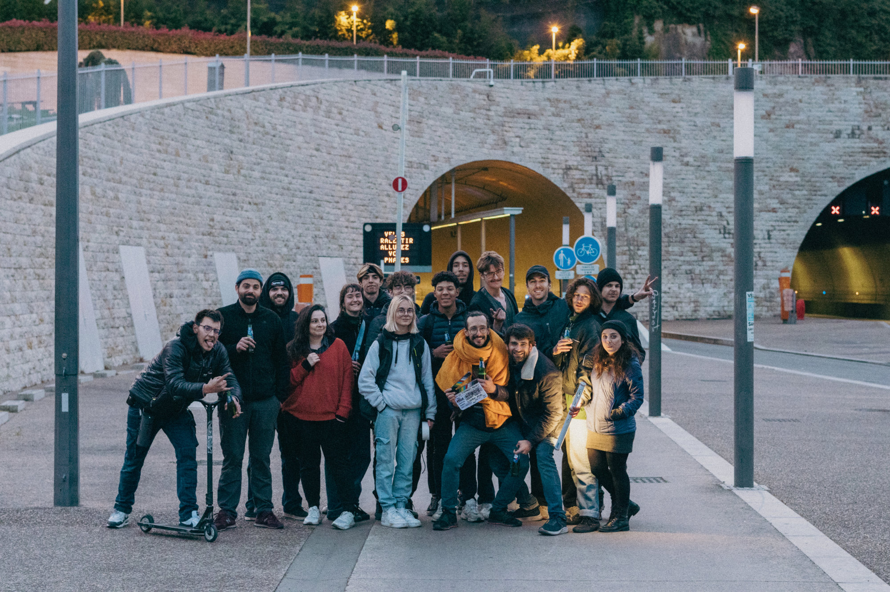
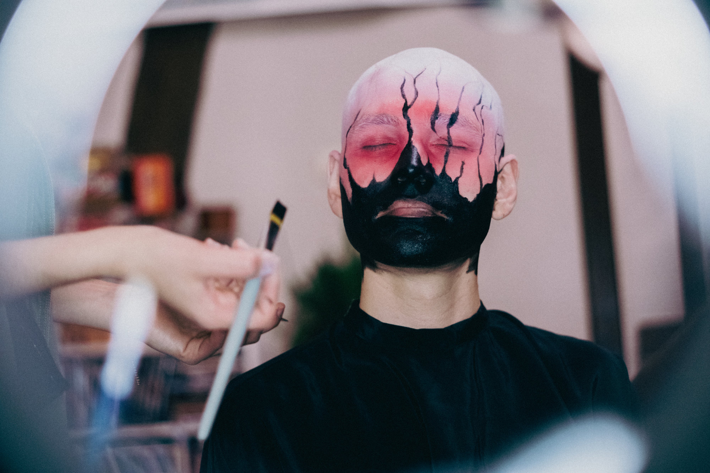
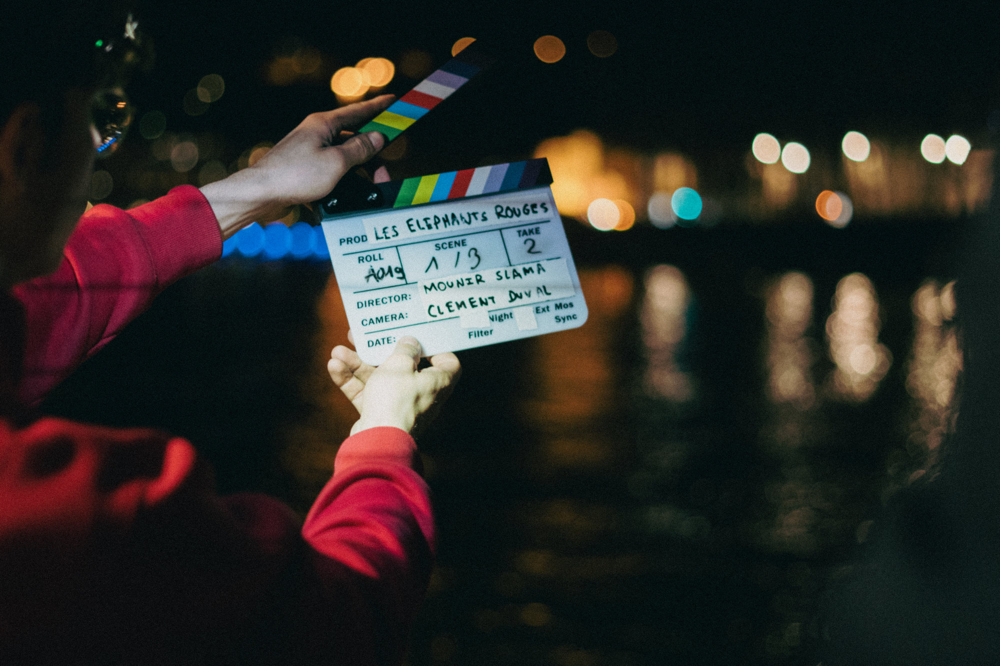
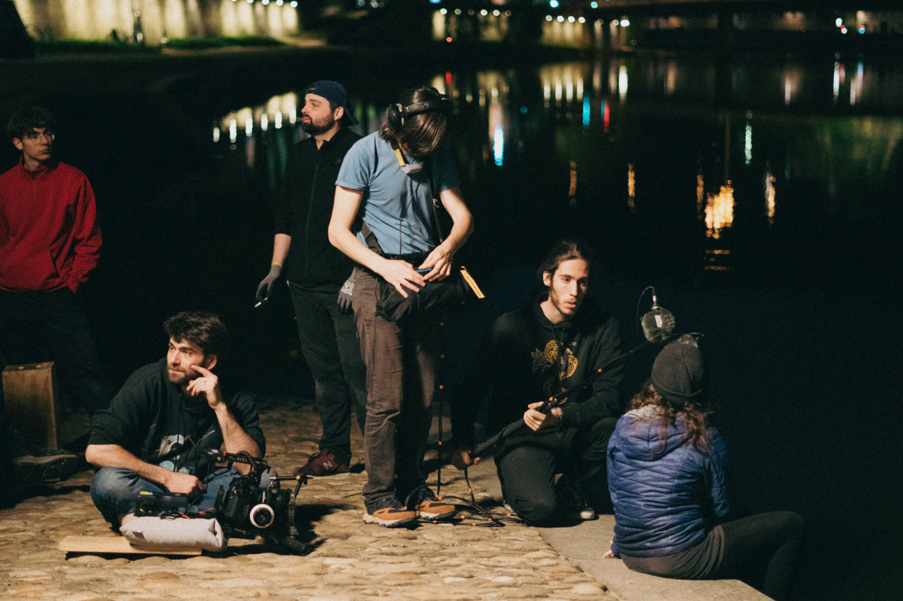
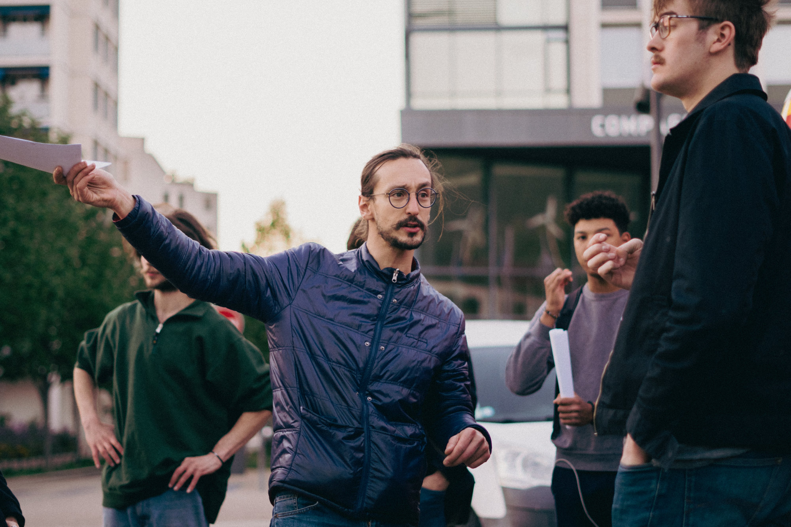
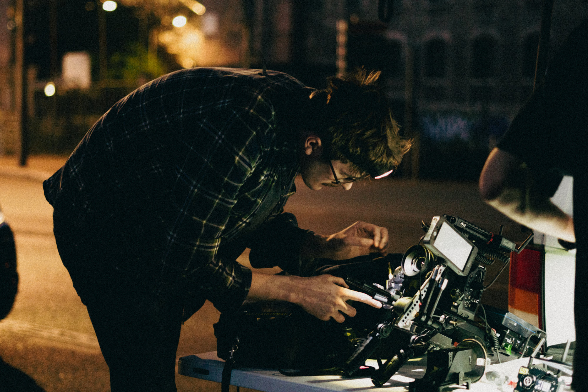
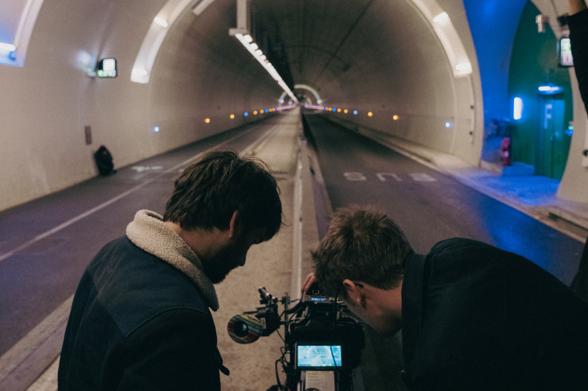
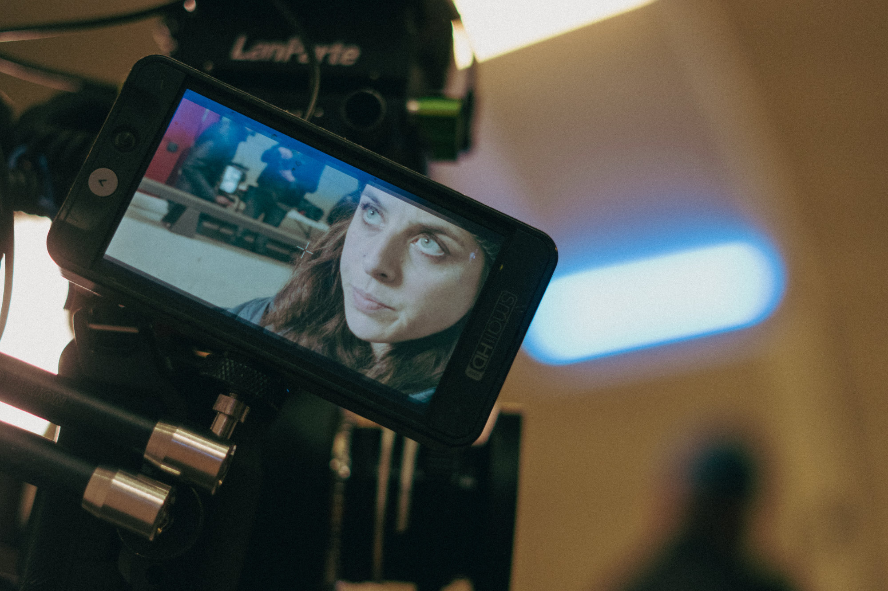

L'ÉQUIPE
| Production, Scénario, | - | SLAMA Mounir |
| Réalisation, Direction artistique | ||
| 1er Rôle | - | TIXIER Johanna |
| Chef Opérateur | - | DUVAL Clément |
| Stagiaire Lumière | - | BRUGGER Emmanuel |
| Chef Machino | - | BALLANFAT Aloïs |
| Stagiaire Machino | - | BESSON Tristan |
| Assistant Cam | - | SAVIER Martin |
| Chef Electro | - | LENOBLE Guillaume |
| Régisseur général | - | TOUZET Marceau |
| Binôme Régie | - | CHAPUIS Manon |
| 1er Assistant réalisation | - | ALLAIS Loris |
| Renfort régie | - | MOULINET Francois |
| Scripte | - | DEVILLARD Adèle |
| Ingénieur son | - | SARZIER Dimitri |
| 2nd assistant réalisation | - | FRIGIÈRE Camille |
| Maquillage | - | IMHOF Anouk |
| Stagiaire Maquillage | - | MICHELAS BARBIER Alice |
| Assistante Maquillage | - | SCHEPPENS Mathilde |
| Photographe | - | LACOTE Noémie |









Photographe - Noémie Lacote